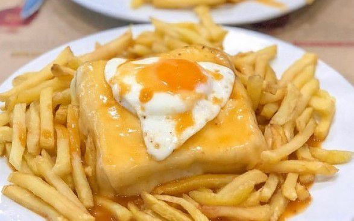

Francesinha á moda do Porto
Tempo de preparação: 45 mins
Tempo Cozedura: 45 mins
Dificuldade: Fácil
Ingredientes:
- 6 fatias de pão de forma
- 8 fatias de queijo
- 2 bifes de vaca pequenos
- 2 salsichas frescas
- 2 linguiças
- 2 fatias de fiambre
- Sal e pimenta q.b.
Para o molho:
- 1 cebola
- 4 dl de cerveja
- 3 colheres (sopa) de polpa de tomate
- 0,5 dl de brandy
- 0,5 dl de Vinho do Porto
- 1 colher (sopa) de margarina
- 1 colher (sopa) de farinha maisena
- 1 cubo de caldo de carne
- 1 folha de louro
- Leite q.b.
- Sal e pimenta q.b.
Modo de preparação
- Para começar esta receita, prepare o molho: descasque a cebola, pique-a grosseiramente, deite para um tacho, junte a margarina e o louro, leve ao lume e deixe cozinhar até ficar douradinha. Adicione a polpa de tomate, o caldo de carne e a cerveja e deixe ferver. Dissolva a farinha maisena num pouco de leite e junte ao tacho, em fio e mexendo sempre. Rectifique o sal, tempere com picante, mexa, junte o brandy e o Vinho do Porto e deixe ferver. Passe pelo passador de rede e leve de novo ao lume brando para aquecer.
- Corte as salsichas ao meio, depois novamente ao meio no sentido do comprimento e tempere-as com sal e pimenta. Corte também as linguiças da mesma maneira. Tempere igualmente os bifes com sal e pimenta. Grelhe os bifes, as salsichas e a linguiça a gosto.
- Torre ligeiramente as fatias de pão e distribua duas fatias por dois pratos. Cubra com uma fatia de fiambre, junte depois o bife e coloque outra fatia de pão. Adicione então a salsicha e a linguiça, cubra com uma fatia de queijo e o restante pão. Junte então três fatias de queijo por cima de cada conjunto, leve ao forno a 200°C até derreter, retire e sirva quentes regadas com o molho.